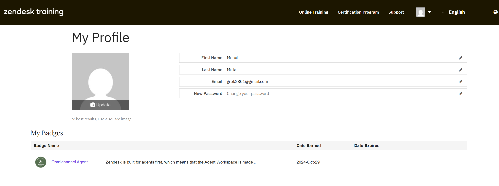

Years supporting real Web3 users in fast-moving environments.
Web3 Customer Support / Community Operations / Zendesk Specialist
Mehul Mittal / 3+ years / India / Remote
Web3 support that keeps users calm and products trusted.
I support users across wallets, NFTs, DeFi, gaming, and DAO ecosystems through Zendesk, Discord, and Telegram. My work combines ticket handling, troubleshooting, escalation, moderation, and knowledge-base support for fast-moving Web3 teams.
3+ years in Web3 support
Zendesk / Discord / Telegram
Wallet / NFT / DeFi troubleshooting
Years delivering hands-on customer support at Game7HQ.
Comfortable collaborating with globally distributed communities and teams.
Working languages: English and Hindi.
About
The kind of support work I do best
My work sits at the intersection of support, product clarity, and community trust. I help users navigate technical issues, onboarding friction, and fast-changing Web3 products without making them feel lost.
I'm especially strong when conversations need empathy and structure at the same time: troubleshooting wallet problems, prioritizing escalations, calming frustrated users, and translating community feedback into something product and engineering teams can act on.
Clear communication
I simplify complex product issues into guidance users can actually follow.
Operational discipline
I work comfortably inside ticket queues, escalation flows, and support documentation systems.
Community awareness
I understand the speed, tone, and expectations of Web3-native communities.
Experience
Support roles shaped by real Web3 environments
My experience combines structured support operations with real-time community moderation, helping users across tickets, Discord, and Telegram while keeping product teams informed with useful escalations.
Delivered multi-channel support across Zendesk, Discord, and Telegram for users navigating technical product issues in a large gaming DAO ecosystem.
- Resolved technical queries, product usage issues, and wallet-related troubleshooting.
- Escalated bugs and feature requests to product and engineering teams.
- Contributed to support documentation, FAQs, and self-serve help content.
Moderated and managed communities across Discord and Telegram, balancing user onboarding, issue resolution, and day-to-day engagement.
- Maintained healthy, spam-free, and productive community spaces.
- Helped new users get oriented and supported active members through issues.
- Protected trust and momentum in public-facing community channels.
Expertise
Built for support teams that need both empathy and execution
I work best in teams that care about response quality, operational clarity, and user trust. My strengths are strongest when support needs to be fast, human, and technically aware at the same time.
Support Operations
- Zendesk ticket management and escalation
- Ticket triage and prioritization
- Knowledge base and FAQ creation
Web3 Product Support
- Wallet troubleshooting
- NFT and DeFi issue handling
- DAO and ecosystem user guidance
Tools & Platforms
- Zendesk
- Discord, Telegram, Slack
- Cross-functional product feedback loops
Communication Strengths
- English and Hindi
- Global time-zone readiness
- Calm user education under pressure
How I work
01
Triage fast
Identify urgency, reduce noise, and route issues with context.
02
Guide clearly
Turn technical friction into steps users can actually complete.
03
Escalate smartly
Bring product and engineering the right details, not just raw complaints.
04
Document patterns
Capture recurring issues so support gets faster and more scalable over time.
Education
Bachelor of Business Administration (Finance)
MATS University
2021 - 2024
Availability
Remote-ready and interviewer-friendly
Based in India, comfortable working across global time zones, and experienced in user-facing roles where communication quality directly affects trust.
Proof of Work
Receipts from my Zendesk support work
These are from my actual work: one screenshot shows assigned-ticket ownership inside Zendesk, and the other shows the Zendesk badge I earned during that time.
Queue Ownership
Zendesk workload snapshot with 1,023 assigned tickets
A real support-work screenshot showing hands-on queue ownership inside Zendesk, including solved and closed tickets within a live community support workflow.

Training Badge
Zendesk Omnichannel Agent badge earned on 2024-Oct-29
A credential from Zendesk training that supports my experience working in agent workflows, queue handling, and customer support operations.
Contact
Let's build stronger user trust in your Web3 product.
If you're hiring for customer support, community operations, or a Web3-facing user success role, I'd love to connect.